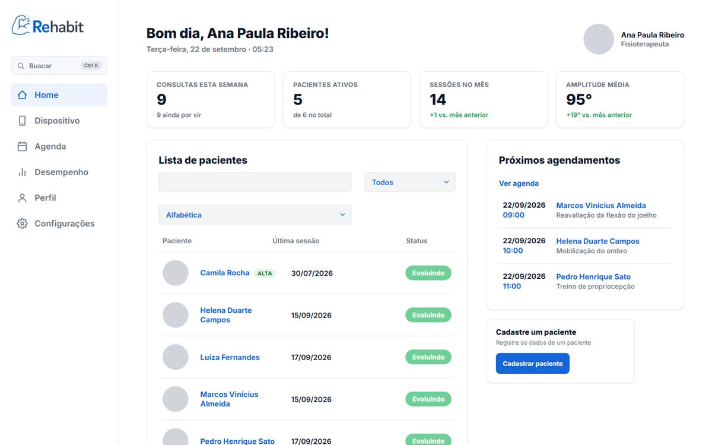
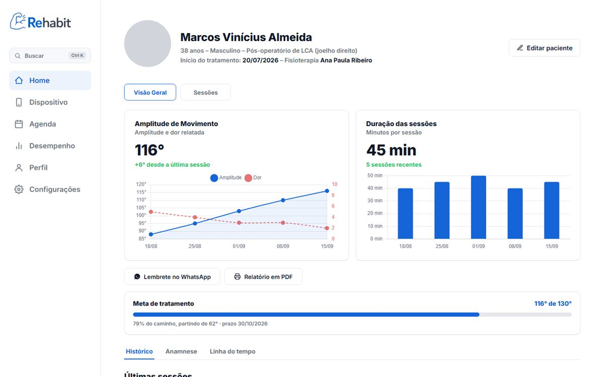
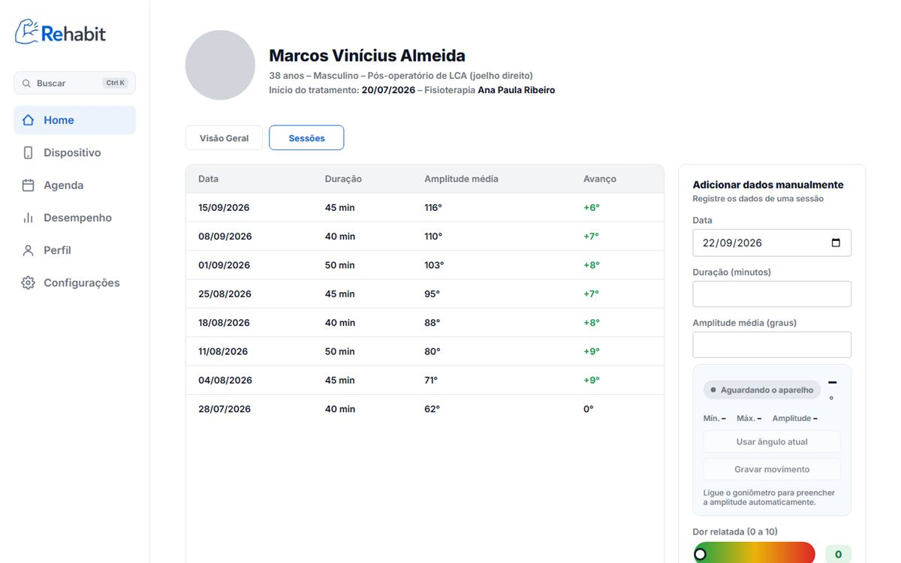
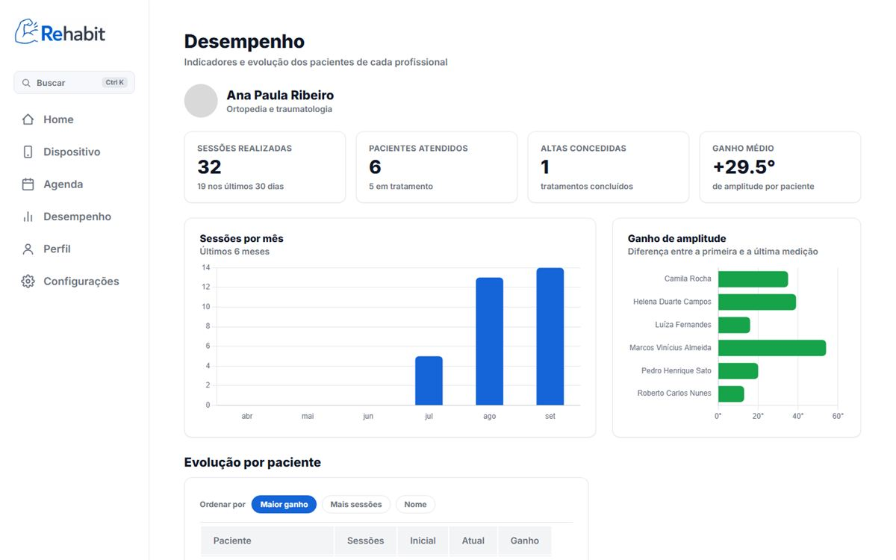
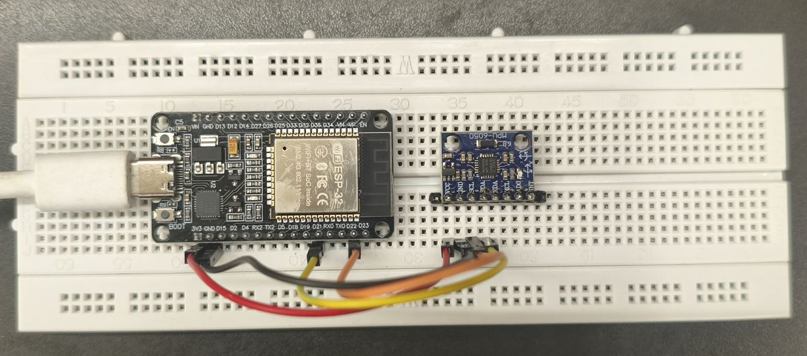

Trabalho de Conclusão de Curso · 2026
Fisioterapia com a amplitude de movimento medida, não estimada.
O Rehabit é um sistema web para clínicas de fisioterapia ligado a um goniômetro digital: o ângulo da articulação chega à tela em tempo real e vira o histórico de evolução de cada paciente.

O problema
A evolução do paciente costuma ficar no papel
A amplitude de movimento é um dos principais sinais de que um tratamento está funcionando. No dia a dia ela é medida com o goniômetro universal, lida a olho e anotada numa ficha, o que torna difícil comparar sessões e mostrar o progresso.
-
Leitura visual
O número depende de quem mede e de como o aparelho foi alinhado na articulação.
-
Registro espalhado
Cada medição vai para uma ficha diferente, e juntar o histórico vira trabalho manual.
-
Progresso invisível
Sem um gráfico, o paciente não enxerga quanto já avançou, e isso pesa na adesão ao tratamento.
Como funciona
Do sensor ao histórico do paciente
-
Mede
O goniômetro, preso ao segmento que se move, calcula o ângulo da articulação com um acelerômetro e um giroscópio.
-
Transmite
Pelo Wi-Fi, cada leitura chega ao sistema e aparece na tela do fisioterapeuta em tempo real.
-
Registra
O fisioterapeuta grava o movimento completo: a amplitude e a curva do movimento ficam salvas na sessão e entram no gráfico de evolução.
Funcionalidades
O que o sistema faz
-
Pacientes e profissionais
Cadastro de pacientes com anamnese e meta de tratamento, e de fisioterapeutas ligados à clínica.
-
Agenda e consultas
Marcação de sessões, presença e faltas, exportação para o Google Agenda e lembrete pelo WhatsApp.
-
Evolução em gráfico
Cada sessão guarda duração, dor relatada e amplitude, e a ficha mostra a evolução e o progresso até a meta.
-
Goniômetro ao vivo
Mostrador com o ângulo atual, gráfico dos últimos 60 segundos, mínimo, máximo e amplitude.
-
Desempenho
Indicadores por profissional: sessões realizadas, altas concedidas e ganho médio de amplitude.
-
Relatórios em PDF
Relatório da evolução do paciente e das consultas, pronto para imprimir ou enviar.
-
Acesso protegido
Confirmação do e-mail por código, verificação anti-robô e recuperação de senha.
-
Tema claro e escuro
Todas as telas têm as duas versões, para o uso confortável em qualquer ambiente.
Telas
Por dentro do Rehabit
Imagens com dados de demonstração: uma clínica fictícia criada para apresentar o projeto.




Hardware
O goniômetro digital
Um ESP32 com um sensor MPU6050 (acelerômetro e giroscópio), programado pela equipe, mede o ângulo e envia cada leitura ao sistema pelo Wi-Fi.
- Zero na pose do paciente. O ângulo é medido a partir do braço pendurado ao lado do tronco, então a placa funciona presa em qualquer orientação.
- Leitura estável. Um filtro complementar combina acelerômetro e giroscópio.
- Tempo real. As leituras chegam ao navegador por Server-Sent Events, com consulta periódica como reserva.
- Pareamento seguro. O aparelho se liga à clínica por um código de 6 dígitos e usa um token próprio, que pode ser revogado.
- Economia de bateria. O servidor dita o ritmo: 10 leituras por segundo gravando, uma a cada 2 segundos parado.
Tecnologias
Como foi construído
- Front-end
- HTML, CSS e JavaScript puros, com animações em GSAP
- Back-end
- API REST em Java 17 com Spring Boot
- Banco de dados
- PostgreSQL (H2 no desenvolvimento)
- Hardware
- ESP32 e MPU6050, firmware em C++ (Arduino)
- Hospedagem
- Vercel para o site e Render para a API
Conheça o Rehabit por dentro
Entre com sua conta ou cadastre uma clínica para experimentar o sistema.